CASE STUDIES
THE THINKINGBEHIND THE PIXELS. - UI/UX design case studies
14 UI/UX case studies told end to end - the problem, the research, the wireframes and the final product. They include my work as an AI product designer on NexusFlow, Flowdeck and Moneo. For a quick look at everything, see all 28 projects.


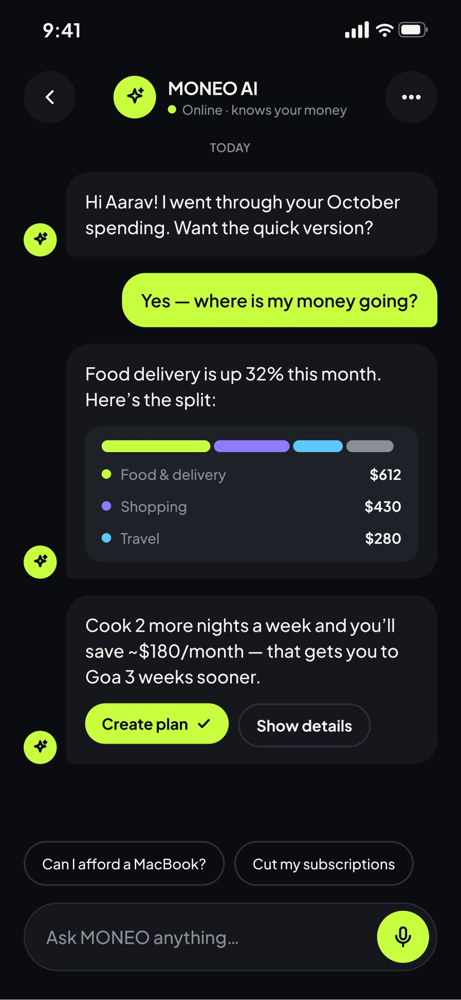
01 Personal Finance
MONEO
An AI money coach that finds leaks in your spending and turns them into goals you actually reach.
THE PROBLEMMost finance apps stop at charts. People see where money went, feel bad and close the app - nothing changes next month.

02 SaaS
FLOWDECK
An AI workspace that reads every request and routes it to the right person or AI agent.
THE PROBLEMOps teams get requests from email, Slack, forms and a dozen tools. Someone has to read each one, find the owner and chase it - and SLAs slip.
Read case study
03 SaaS
NEXUS
One platform for requests, approvals, tasks and reports across every department.
THE PROBLEMTeams were chasing approvals in email threads and spreadsheets, with no clear owner or status for any request.
Read case study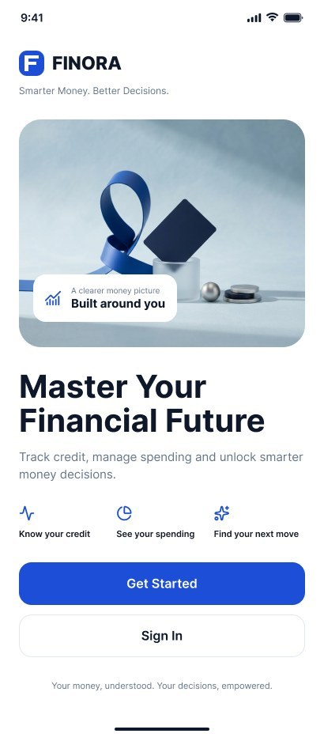
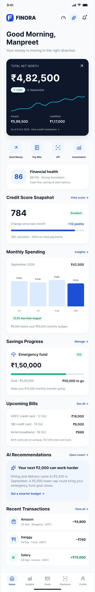
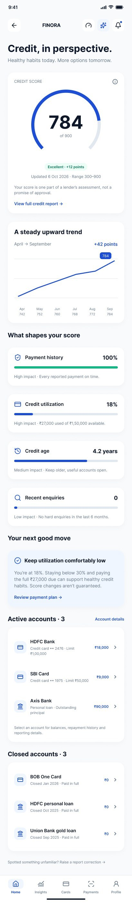
04 Fintech
FINORA
A calm money app that explains your credit score, cards and spending - with an AI coach for the next step.
THE PROBLEMCredit scores, card bills and UPI payments live in different apps and none of them explain what to do next.
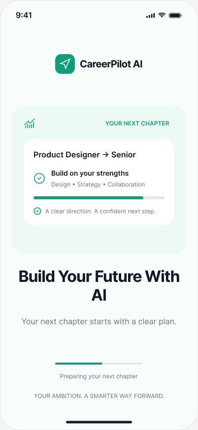
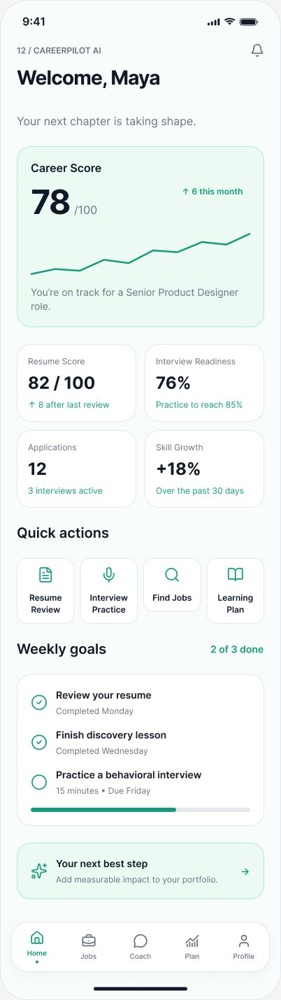
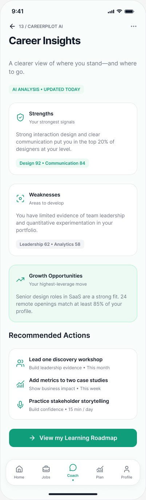
05 EdTech & Careers
CAREERPILOT
AI
An AI career coach that turns your skills into a clear roadmap, job matches and interview practice.
THE PROBLEMJob seekers know they need to grow but not which skills, which roles or how to prepare.
Read case study
06 E-commerce
HALCYON
Weightless, by design - a premium sneaker store where one hero product does all the talking.
THE PROBLEMHALCYON is a limited sneaker drop - 2,700 numbered pairs of the HX-01, with a visible four-chamber air sole. The store needed to feel as light as the product and make that sole impossible to miss.
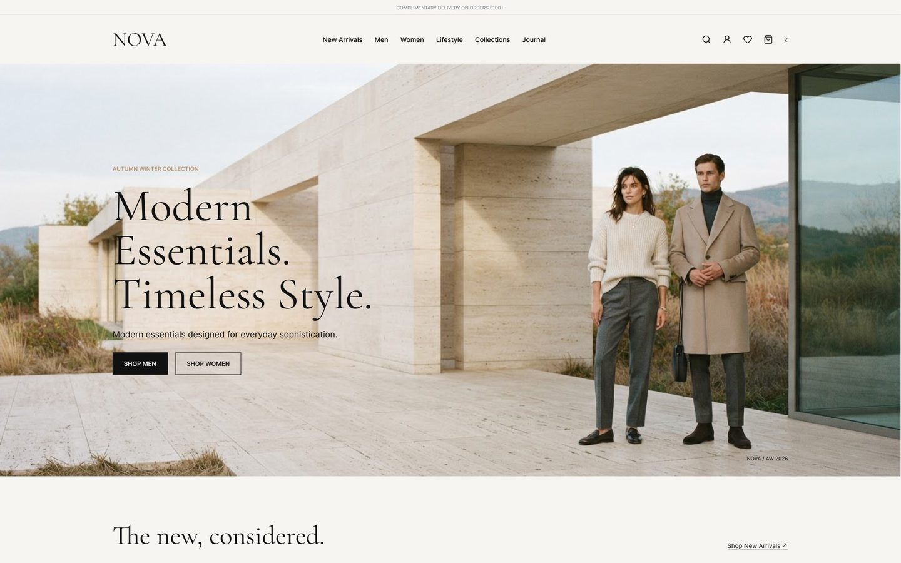
07 E-commerce & Retail
NOVA
A quiet-luxury fashion store where product, not clutter, does the selling.
THE PROBLEMFashion stores often bury products under banners, pop-ups and discounts - it makes premium pieces feel cheap.

08 Hospitality
PINEHAVEN
A calm, nature-first website for booking cabins and lodges.
THE PROBLEMLodge sites often bury availability under long pages and pop-ups, so guests leave before they book.
Read case study
09 AI SaaS
SIHARA
An AI retreat and workshop producer that turns planning, budgets, follow-ups and marketing into one calm conversation.
THE PROBLEMRetreat leaders juggle venues, suppliers, budgets and marketing on top of the creative work - another dashboard only adds load.
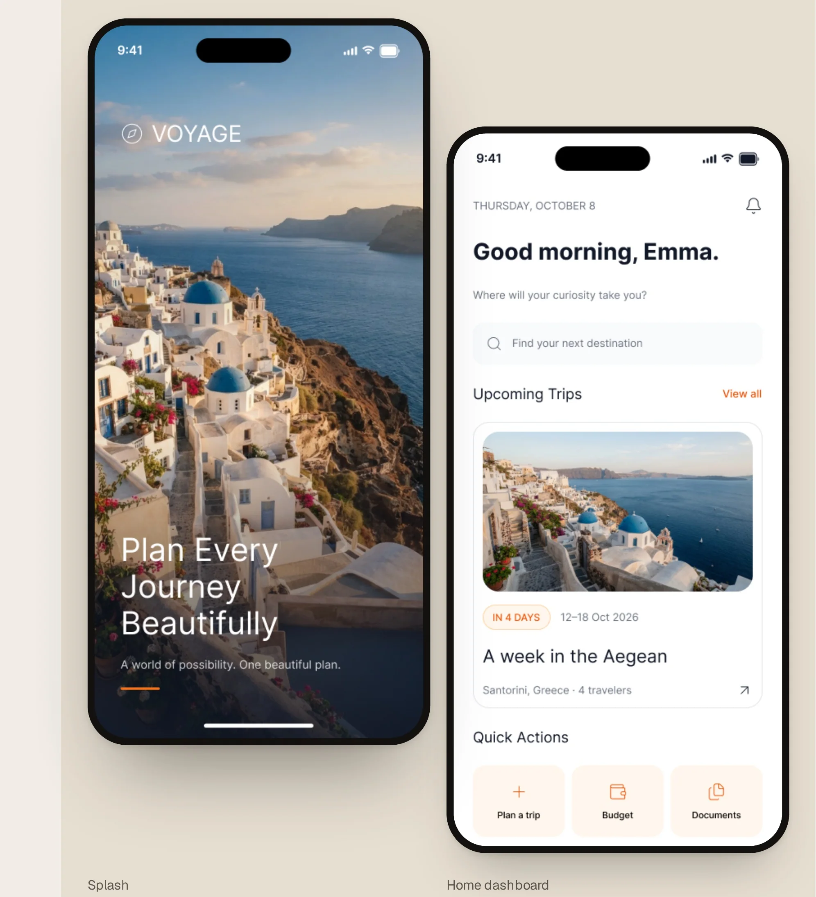
10 Travel app
TRAVELLER
A trip planner that connects discovery, itinerary, bookings, budgets and group coordination in one journey.
THE PROBLEMTravellers juggle maps, booking sites, notes, weather apps, expense sheets and group chats for a single trip.
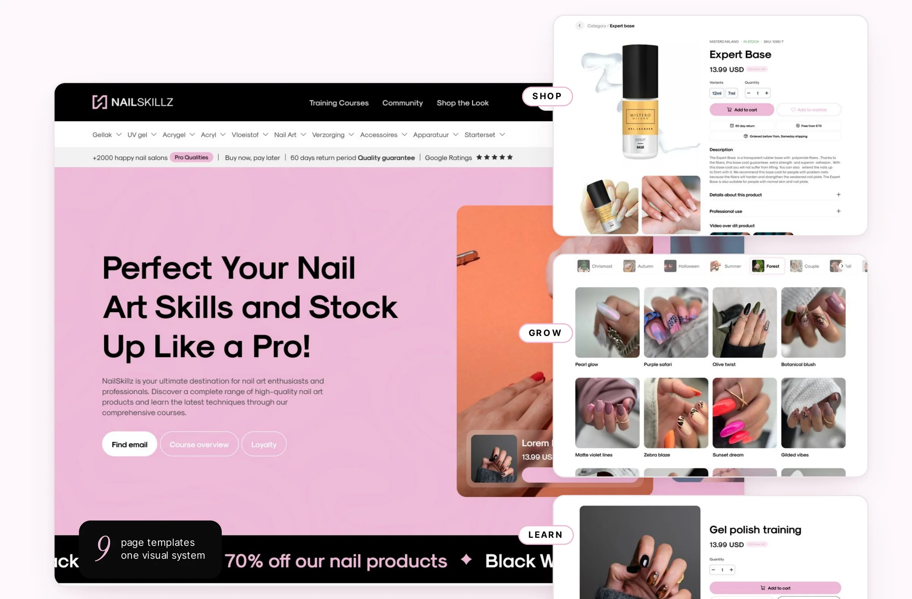
11 E-commerce + education
NAILSKILLZ
A digital home for nail professionals: shop products, book training and get inspired under one brand.
THE PROBLEMOne professional might restock gel, book a course and browse nail art in the same visit - each needs a different kind of page.

12 EdTech app
IMPACT
A mobile learning app built on 10-15 minute sessions, with progress visible at five scales.
THE PROBLEMA session lasts ten minutes but the journey lasts weeks - learners need to see both to keep going.
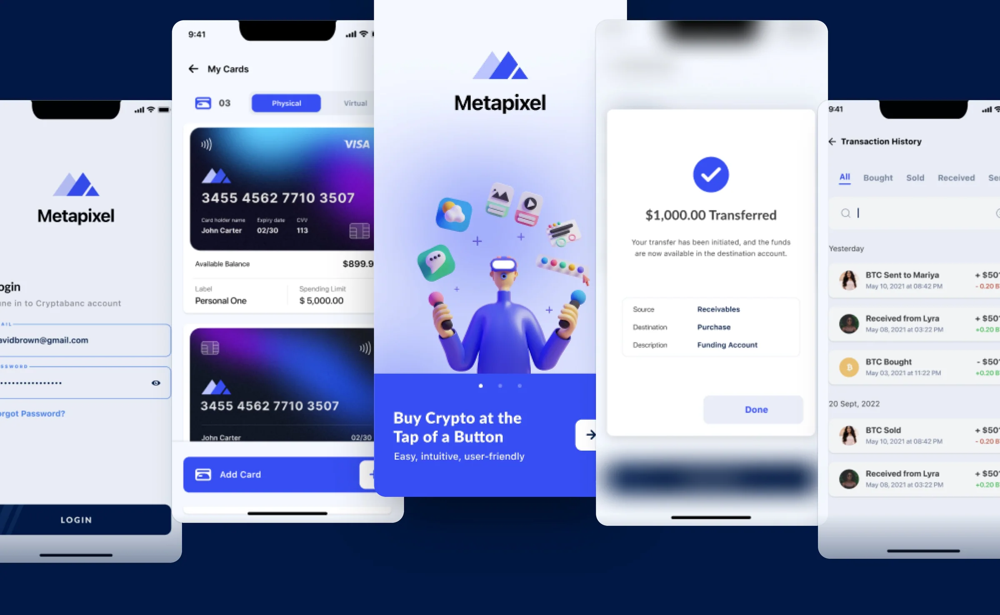
13 Fintech · Web3
METAPIXEL
A 200+ screen mobile app for banking, cards, crypto, transfers and KYC, built on one reusable UI system.
THE PROBLEMEach feature was simple; together, six financial worlds in one app became hard to understand and predict.
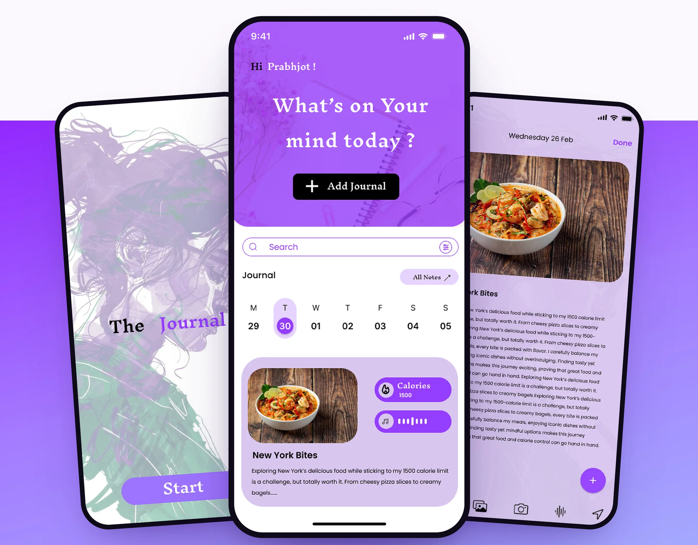
14 iOS app
THE JOURNAL
A personal journaling app where writing takes seconds and entries are found by the day they happened.
THE PROBLEMCapture happens in seconds; recall happens weeks later, with a rough sense of when - rarely of a title.